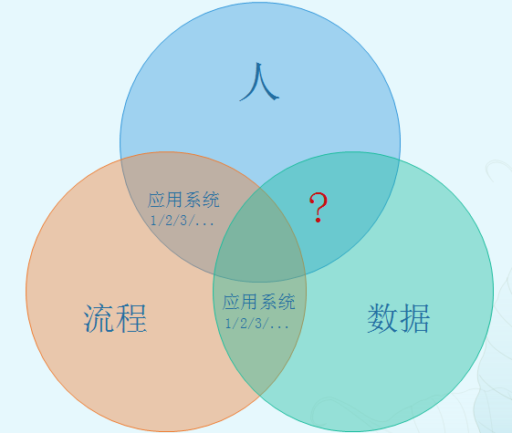
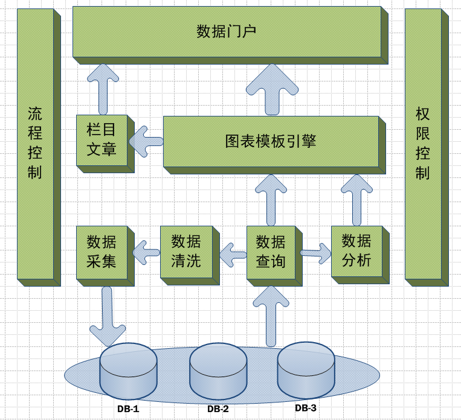
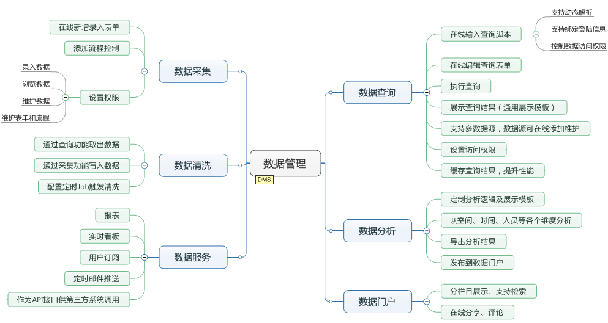
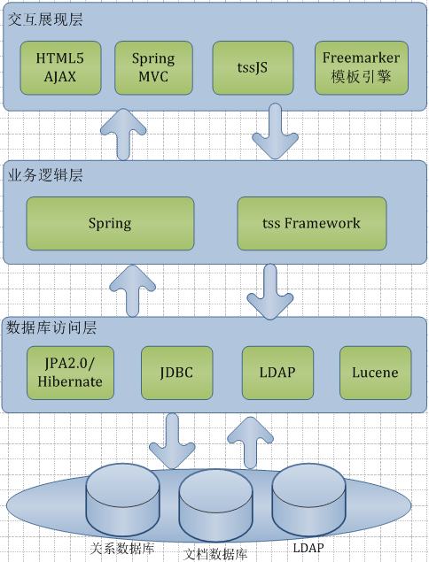
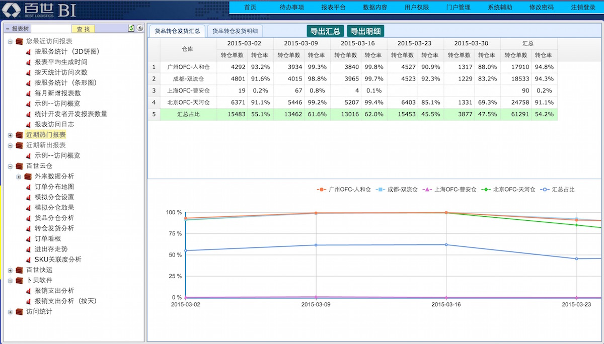
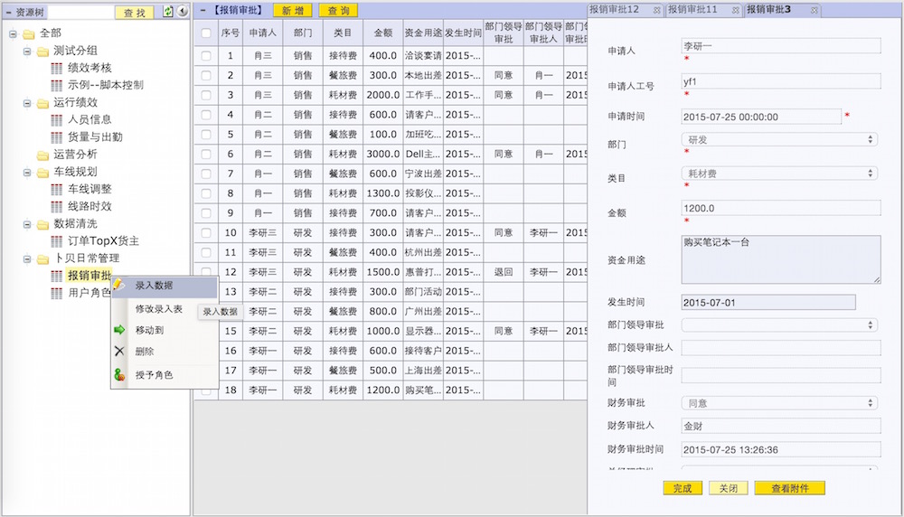
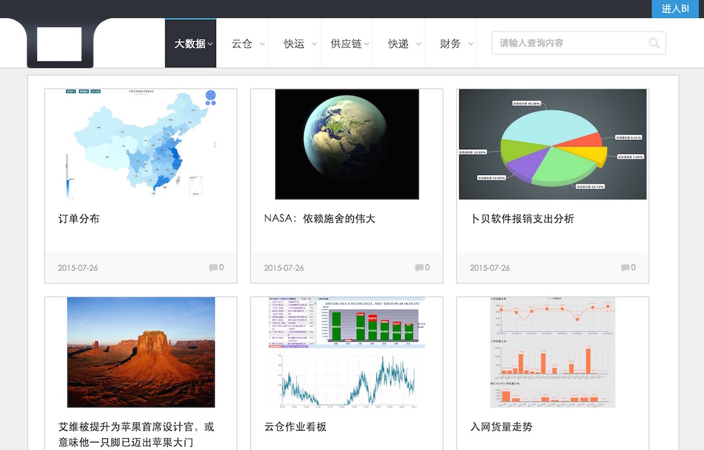
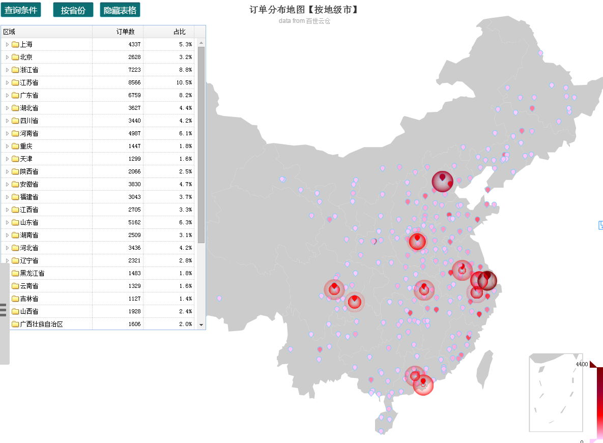
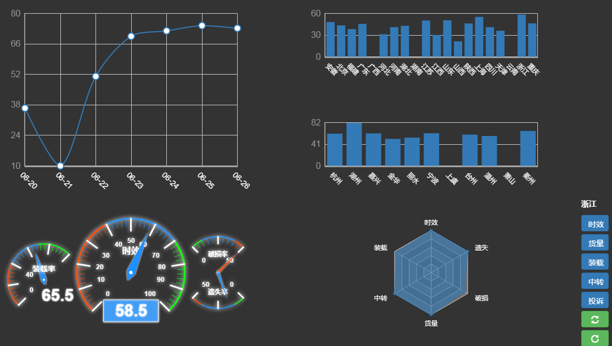

它山之石，可以攻玉；它山之石，可以试错。
be your own data hero!
它山石 是什么？
它山石（简称TSS）是一个开源的数据处理引擎，提供在线数据查询、数据分析、数据清洗、数据采集、对外数据服务、数据门户等功能，可全方位管理数据的生成、分析、呈现、感知，及共享。
通常一个信息化的企业日常活动包含人、流程、数据这三个要素。人通过各类应用系统（ERP、CRM、各种业务软件）发起流程，如报销流程、采购流程等，流程再通过应用系统对数据进行读写。数据随着时间不断沉淀增长，在现今的大数据时代正成为各个公司重要的无形资产。而各个应用系统通常只会分析由自身系统产生的数据，很难有哪个业务系统能全方位、综合性的分析企业的全盘数据。TSS的目的就是要打通人和数据之间的联通，降低挖掘数据价值的难度和成本，让数据可视化，让数据价值凸显。正像搜索引擎之于Internet，它山石立志做结构化数据领域的数据处理引擎，挖掘无处不在的沉淀数据以焕发其价值。
TSS同时也是一个应用基础平台，通过定制数据录入表单及流程控制，快速的开发业务流程。除此还提供专门的技术框架、功能组件及常见问题解决方案，基于此，能快速、高效、低成本搭建具体业务系统，开发者可以专注于业务逻辑的实现，无需为纷杂多变的各种软件技术而分心。降低开发门槛的同时，也减少了不必要的沟通环节，将通常的软件工程：业务人员-->产品经理-->项目经理-->开发人员-->测试人员，缩减为 业务人员<-->二次开发人员 ，从而最大限度的保证软件的概念完整性和一致性（通常，环节越多，参与人数增加，曲解需求及做出来的东西不符合最初的设计的概率就会越大）。
它山石特色：
1、设计高度模块化，通用灵活，可组合复用
2、数据表单、流程、权限、报表、门户、栏目内容，直接在线开发、在线发布
3、权限模型灵活，对业务对象进行严格的权限控制
4、Portal聚合一切、提供统一入口（支持单点登录），实现一站式访问
5、技术前沿：HTML5 移动访问等
它山石产品架构
它山石数据引擎思维导图
它山石技术架构
 主要开发语言为Java和JavaScript，后端框架底层采用JPA2.0/JDBC + Spring，前端为HTML5。
- 前后端交换一律采用AJAX，数据格式同时支持XML和JSON
- 前端使用tssJS框架，提供常用DOM操作、事件处理、AJAX交互、数据解析等核心封装，统一的界面样式布局，及菜单、Tree、Grid、Form、Layout、Panel、Message等常用组件
- Spring MVC将后端服务发布成restful风格的web服务
- Spring提供IOC容器及AOP机制，对业务对象的生成、依赖、事务、权限、日志、缓存等进行统一管理
- 使用Freemarker作为模板解析引擎，应用于门户、数据图表等支持模板化二次定制开发
- 使用Lucene作为文档化数据的搜索引擎
- 持久层采用JPA2.0，支持多数据源, 数据库支持MySQL、H2、Oracle等
框架特色：
1、前后端框架为自主原创，可控、实用、高效、易扩展、易维护
2、前后端充分解耦合，开发时前后独立进行、互不依赖
它山石实例展示
数据报表管理界面
数据采集管理界面
BI数据门户
订单分布地图
快运物流驾驶舱
